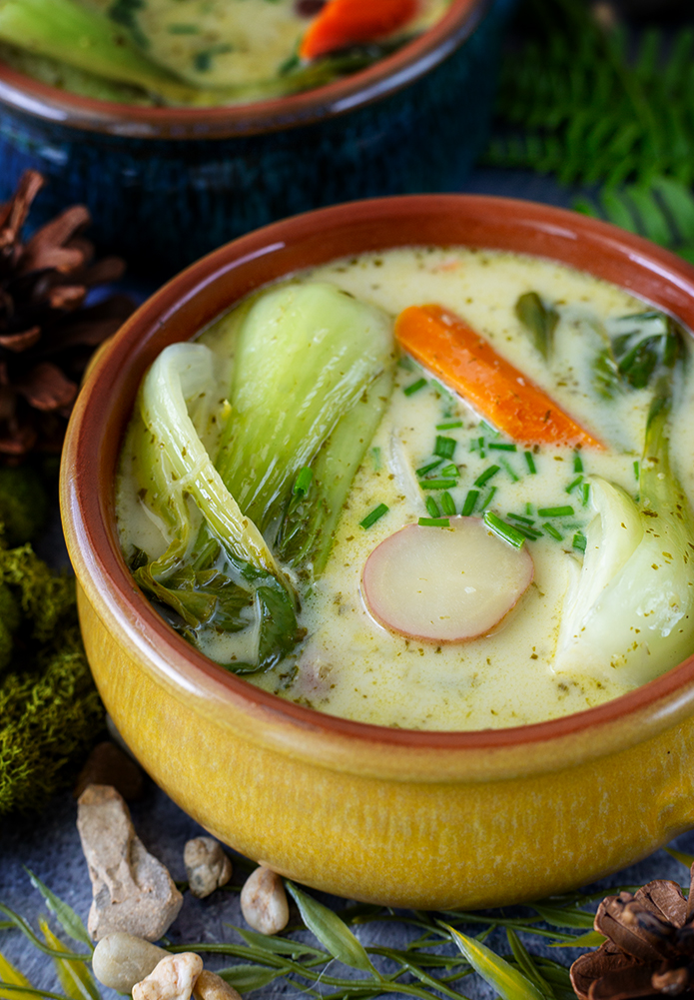

Cream of Vegetable Soup

Start your journey right with a bowl of this hearty soup.
Ingredients
Green Chilli Paste
- 1/2 bunch of cilantro
- 5 garlic cloves
- 2 scallions
- 2 thai green chilli
- 1/2 inch piece of ginger peeled and sliced
- 1 lemongrass
- 1 tsp black peppercorns ground
- 1 tsp corilander seeds ground
- 1/2 tsp cumin seeds ground
- 2 tsp salt
- 1 tsp sugar
- zest and juice of 2 limes
- 2 tsp canola oil
Soup
- 1 tbsp canola oil
- 1/2 onion sliced
- 1/2 red onion sliced
- 1/2 lb small potato medley
- 3 carrots peeled and cut into bite size slices
- 2 cups vegetable broth
- 4 baby bok choy quartered
- 30 oz coconut milk
- chives diced
Directions
Green Chilli Paste
- In a food processor, place all the ingredients for the paste and pulse until it resembles a thick salsa.
- Store in the refrigerator until you are ready to use.
Soup
- Heat a pot with one tablesppon of canola oil over medium-high heat.
- Add onions and cook until softened, about 5 minuets.
- Add potatoes and carrots, toss together, and cook for five minutes to slightly heat the vegetables.
- Add the vegetable broth. Bring to a boil, then reduce the heat to a simmer. Place lid slightly ajar and simmer for 20 minutes.
- Add the curry paste and coconut milk. Mix well.
- Add the bok choy and simmer for an additional 5 minutes or until the bok choy is softened.
- Serve in a bowl with cooked rice or udon. Top with chives.
Home Page